এই পোস্টটি পড়ার পূর্বে অবশ্যাই ব্যালেন্সন্ড বাইনারী ট্রি নিয়ে স্বচ্ছ ধারনা থাকতে হবে
এভিএল ট্রি
এভিএল ট্রি হল একটি সেলফ ব্যালেন্সিং বাইনারী সার্চ ট্রি। এর লেফট সাবট্রি এর হাইট ও রাইট সাবট্রি এর হাইটের সর্বোচ্চ ব্যাবধান হতে পারবে ১
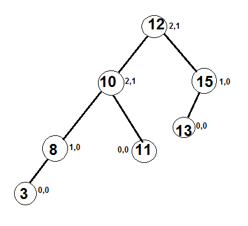
এই ট্রি টির জন্য আমরা প্রত্যেকটি নোডের জন্য,
। লেফট সাবট্রি এর হাইট &ndashরাইট সাবট্রি এর হাইট ।
<=১
তাহলে এটি একটি ব্যালেন্সড বাইনারী ট্রি ও এভিএল ট্রি । নিচের ট্রি টি খেয়াল করি
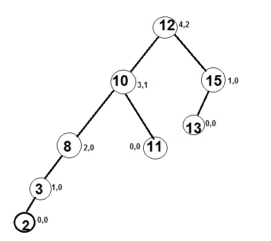
আমারা এখানে এক্সট্রা নোড ২ কে ইনপুট করার পর ট্রি টি উপরের মত হয়েছে ,
এখানে নোড ৮,১০,১২ এর জন্য ,
। লেফট সাবট্রি এর হাইট &ndashরাইট সাবট্রি এর হাইট । > ১
এটি একটি ব্যালেন্সড বাইনারী ট্রি কিন্তু এভিএল ট্রি নয় ।
এভিএল ট্রি কেন দরকার?
বিএসটি(বাইনারী সার্চ ট্রি) এর সার্চিং কমপ্লেক্সিটি O(h) , অর্থাৎ এটি বাইনারি ট্রি এর হাইট এর উপর নির্ভর করে। এভারেজ কেসের জন্য কমপ্লেক্সিটি হবে O(logN) কিন্তু নিচের মত স্ট্রিকলি ইনক্রিসিং হলে কমপ্লেক্সিটি হবে O(N)
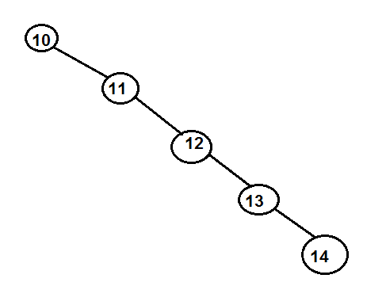
এই ট্রি টিকে যদি আমরা এভিএল ট্রিতে রূপান্তর করি সার্চিং কমপ্লেক্সিটি দাঁড়াবে O(logN)
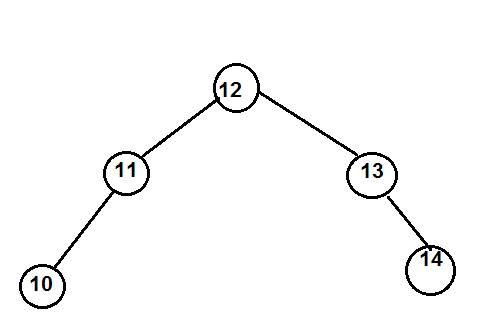
এখানে আমরা শুধু দেখবে এভিএল ট্রিতে কিভাবে ইনসার্ট করতে হয়, তার আগে ২ ধরনের রোটেশন নিয়ে পরিচিত হতে হবে
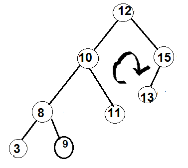
১২ নোডকে পিভট ধরে এর সাপেক্ষে রোটেট করিয়া পাই
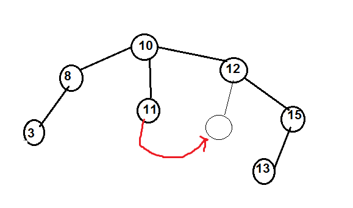
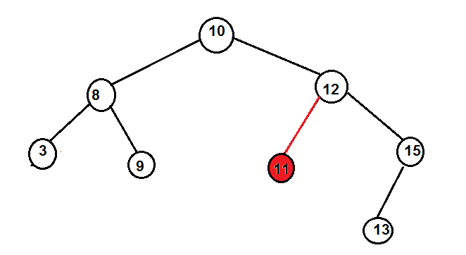
লেফট রোটেট রাইট রোটেড এর মিরর কেস , তাই আমি আর কস্ট করে ছবি না একে মিরর করে দিয়েছি 😛
আশা করি সংখ্যা গুলো বুজতে কষ্ট হবে নাহ
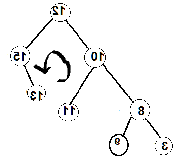
আগের মত ১২ নোডকে পিভট ধরে এর সাপেক্ষে রোটেট করিয়া পাই,
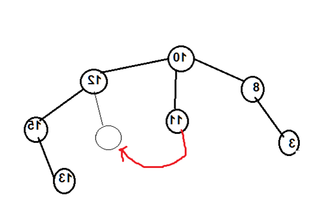
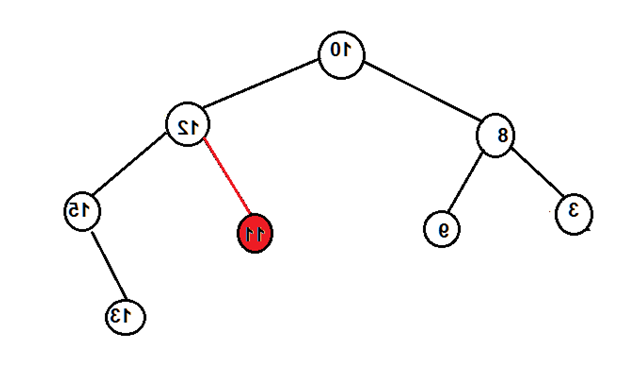
বিঃদ্রঃ এখানে জাস্ট রোটেট বুজানোর জন্য করা হয়েছে ট্রি টি বিএসটি নয় , বিএসটি হলেও সেম হবে
এখন আসি এলগরিদমেঃ
১। প্রথমে আমরা নরমাল বিএসটি ইন্সার্ট করব
২। তারপর আমারা ইন্সার্টকৃত নোডটি ধরে উপরে ঊঠে এসে আনব্যান্সেল্যন্ড নোডকে সনাক্ত করব, তারপর সেখানে প্রয়োজনীয় লেফট অথবা রাইট রোটেশন করে ব্যালেন্স করব অর্থাৎ
লেফট ও রাইট সাবট্রি এর হাইটের ব্যাবধান সর্বোচ্চ ১ হবে
এখন একটু কনফিজড লাগতে পারে , আস্তে আস্তে ক্লিয়ার হবে,
৩। ট্রি ব্যালেন্স করার সময় আমদের কাছে চারটি কেস আসতে পারে
১। লেফট লেফট কেস
২। লেফট রাইট কেস
৩।রাইট রাইট কেস
৪।রাইট লেফট কেস
এখানে ট্রি এর ছবি গুলো geeksforgeeks থেকে নেয়াঃ
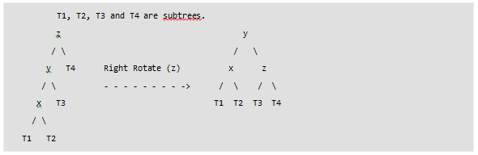
এখানে z হল প্রথম আনব্যলেন্সড নোড , তাই Z কে কেন্দ করে রোটেড করলে আমাদের ট্রি টি ব্যালেন্সড হবে , খাতায় সিমুলেশন করে দেখার জন্য অনুরোধ জানাচ্ছি
কেন এটি লেফট রাইট কেস আশা করি বুজতে অসুবিধা হয়নি
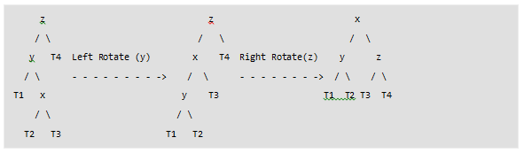
এই ক্ষেত্রে ব্যলেন্স করার জন্য আগে y কে কেন্দ্র করে লেফট রোটেড করা লাগবে ,তারপর z কে কেন্দ্র করে রাইট রোটেড করা লাগবে । এক্ষেত্রে লক্ষনীয় লেফট রোটেড করার সময় y নোডটি উপরে উঠে আসে যেটিকে আমরা z এর লেফটে রেখেছি।
একই ভাবে রাইট রাইট কেস ও রাইট লেফট কেস দেখানো যায়ঃ
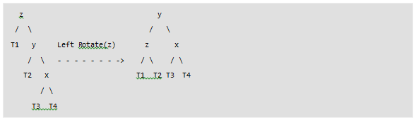
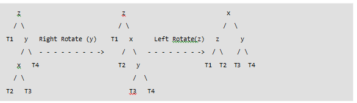
এখন আমারা দেখব ইন্সারট কিভাবে কাজ করে, তার আগে ব্যলেন্স ফ্যাক্ট সমন্ধে জানা দরকার
ব্যালেন্স ফ্যক্টর=লেফট সাবট্রি এর হাইট &ndash রাইট সাবট্রি এর হাইট
ব্যালেন্স ফ্যাক্টর এর মান হতে পারে -১ থেকে +১ এর মধ্যে যদি -১ থেকে ছোট হয় তার মানে রাইট সাবট্রি এর হাইট বেশি আছে , আর ব্যালেন্স ফ্যক্টর +১ থেকে বড় হয় লেফট সাবট্রি এর হাইট বেশি আছে
তাহলে
ব্যালেন্স ফ্যাক্টর >১ হলে,
লেফট লেফট কেস অথবা লেফট রাইট কেস
ব্যালেন্স ফ্যাক্টর <-১ হলে ,
রাইট রাইট কেস অথবা রাইট লেফট কেস
কখন লেফট লেফট কেস ও কখন লেফট রাইট কেস হবে তা এইটি উদাহারন দেখলেই পরিস্কার হবে ,
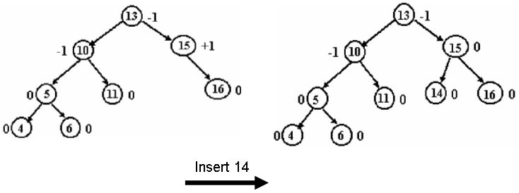
এখানে ১৪ ইন্সার্ট করার পরও ট্রি এর ব্যালেন্স ফ্যাক্টর ঠিক আছে , তাই আমাদের কোন প্রকার রোটেশন করতে হবে নাহ
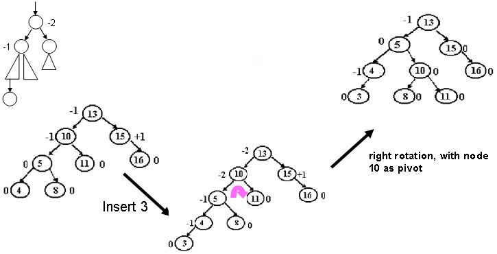
এইবার আমরা ৩ কে ইন্সার্ট করব ১০ নোডে ব্যালেন্স ফ্যাক্টর -২ হয়ে গেছে মানে লেফট লেফট ওর লেফট রাইট কেস , চোখে দেখে বুজা যাচ্ছে লেফট লেফট কেস কিন্তু কোডে কিভাবে বুজাব?
এখানে লক্ষনীয় ৩ ইন্সার্ট করার আগে ট্রি টি কিন্তু ব্যালেন্সড ছিল মানে ট্রি টি আনব্যালেন্স করার জন্য ৩ ই দায়ী, তাই যদি আমরা চেক করতে পারি ৩ কোথায় ঢুকছে তাহলে লেফট লেফট কেস কিনা খুজে পাব
আমরা জানি ব্যালেন্সড বাইনারী ট্রিতে
node.left
তার মানে যে নোড টি ইন্সার্ট করব তার মান যদি আনব্যালেন্সড নোডের লেফটের নোড থেকে কম থাকে তাহলে লেফটে ঢুকবে তখন লেফট লেফট কেস হবে আর বেশি হলে রাইটে ঢুকবে লেফট রাইট কেস হবে আর আমরা জানি লেফট লেফট কেস হলে রাইট রোটেশন আর লেফট রাইট হলে প্রথমে লেফট রোটেশন তারপর রাইট রোটেশন করতে হবে হবে একই ভাবে রাইট রাইট ও রাইট লেফট কেস ও কাজ করবে 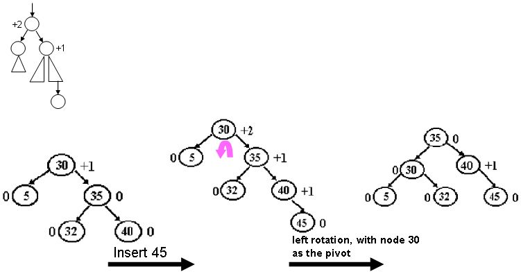 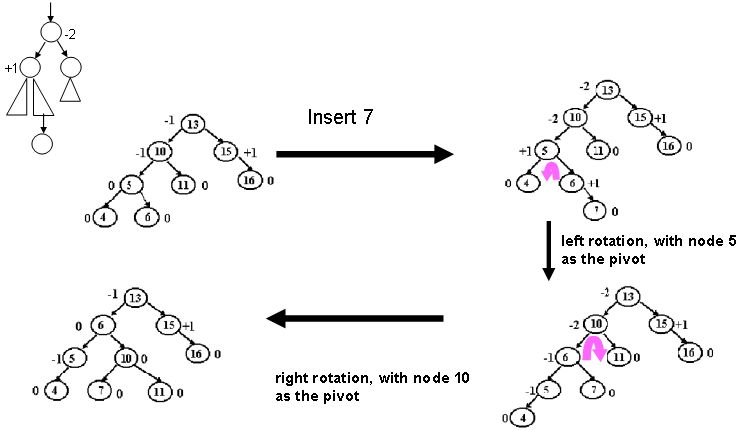 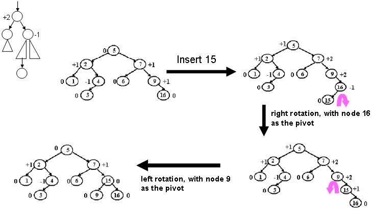
ইমপ্লিমেটেশনঃ
উপরের অলগরিদম বুজলে ইমপ্লিমেটেশন অনেক সহজ। আমি জাভা দিয়ে দেখিয়েছি ,
(যারা জাভা এর সাথে পরিচিত নয় তাদের জন্য,
এখানে জাভায়
Node left,right
সি++ এর
Node *left,*right
একই জিনিস কারন জাভায় সব ভ্যারিএবল পয়েন্টার হিসেবে কাজ করে প্রিমিটিভ টাইপ ছাড়া(int,float,double,long)
আর প্রিমিটিভ ছাড়া সব ফাংশনই কল বাই রেফারেন্স হিসেবে কাজ করে
আশা করি কোডটি বুজতে সুবিধা হবে)
class Node{
int key,height
Node left,right
Node(int d)
{
key=d
height=1
}
}
প্রথমে আমরা একটি নোড ডিক্লেয়ার করলাম
Node rightRotate(Node y)
{
Node x=y.left
Node T=x.right
x.right=y
y.left=T
x.height=max(height(x.left),height(x.right))+1
y.height=max(height(y.left),height(y.right))+1
return x
}
এটি রাইট রোটেড এর কোড নিচের এক্সাম্পলের সাথে মিলিয়ে দেখলেই বুজতে পারা যাবে
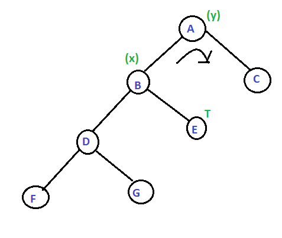
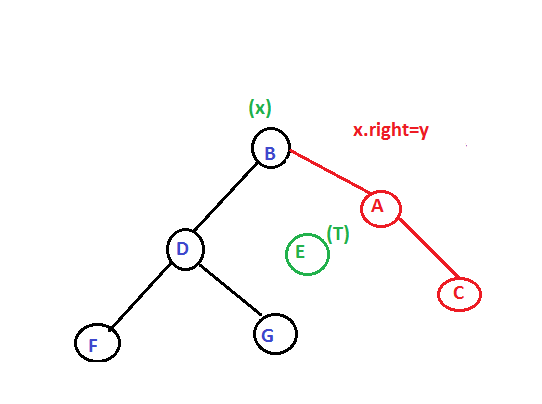
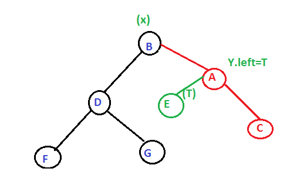
Node leftRotate(Node x){
Node y=x.right
Node T=y.left
y.left=x
x.right=T
x.height=max(height(x.left),height(x.right))+1
y.height=max(height(y.left),height(y.right))+1
return y
}
রাইট রোটেট এর মত সিমুলেশন করে পাওয়া যাবে মিরর কেস
রোটেট করা হলে নোড গুলোর হাইট ঠিক করা হয়েছে। এখন ইনসারশন এর কোড দেখব
Node insert(Node node,int key)
{
if(node==null)
return (new Node(key))
if(keynode.key)
node.right=insert(node.right,key)
else
return node
// এই পর্যন্ত নরমাল বিএসটি ইনসারট
node.height=1+max(height(node.right),height(node.left))
//নোডের হাইট আপডেট করছি
int balance=height(node.left)-height(node.right)
//ব্যালেন্স ফ্যাক্টর বের করছি
if(balance>1&&key1&&key>node.left.key){//লেফট রাইট কেস
node.left=leftRotate(node.left)
return rightRotate(node)
}
if(balancenode.right.key)//রাইট রাইট কেস
return leftRotate(node)
if(balance
<-1&&keyb)?a:b
}
Node rightRotate(Node y)
{
Node x=y.left
Node T=x.right
x.right=y
y.left=T
x.height=max(height(x.left),height(x.right))+1
y.height=max(height(y.left),height(y.right))+1
return x
}
Node leftRotate(Node x){
Node y=x.right
Node T=y.left
y.left=x
x.right=T
x.height=max(height(x.left),height(x.right))+1
y.height=max(height(y.left),height(y.right))+1
return y
}
Node insert(Node node,int key)
{
if(node==null)
return (new Node(key))
if(keynode.key)
node.right=insert(node.right,key)
else
return node
node.height=1+max(height(node.right),height(node.left))
int balance=height(node.left)-height(node.right)
if(balance>1&&key1&&key>node.left.key){//LR
node.left=leftRotate(node.left)
return rightRotate(node)
}
if(balancenode.right.key)//RR
return leftRotate(node)
if(balance
<-1&&key
node.right=rightRotate(node.right)
return leftRotate(node)
}
return node
}
void preOrder(Node node)
{
if(node!=null){
System.out.print(node.key+" ")
preOrder(node.left)
preOrder(node.right)
}
}
public static void main(String args[])
{
AVLTree tree=new AVLTree()
tree.root = tree.insert(tree.root, 10)
tree.root = tree.insert(tree.root, 20)
tree.root = tree.insert(tree.root, 30)
tree.root
= tree.insert(tree.root, 40)
tree.root = tree.insert(tree.root, 50)
tree.root = tree.insert(tree.root, 25)
tree.preOrder(tree.root)
}
}
এখানে লেফট ও রাইট রোটেশন কন্সেটেন্ট কমপ্লেক্সিটিতে কাজ করে তাই এভিএল এর ইনসার্ট এর কমপ্লেক্সিটি O(logN)
পরের পর্বে আমরা এভিএল ট্রি এর ডিলিট অপারেশনটা দেখব